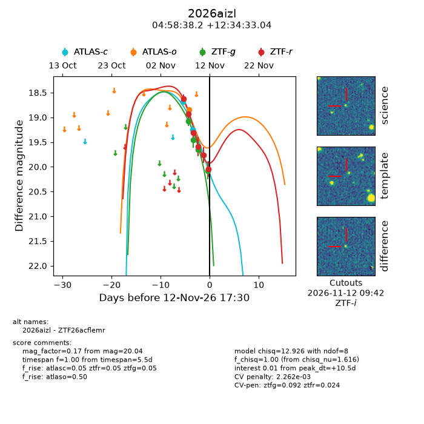
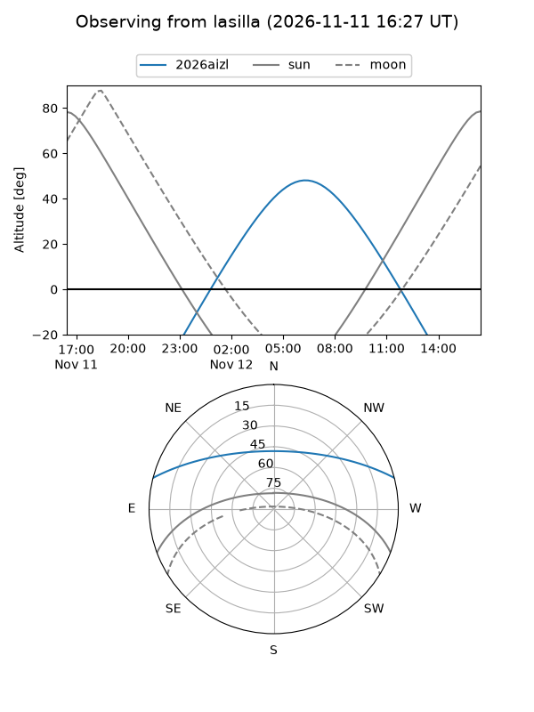
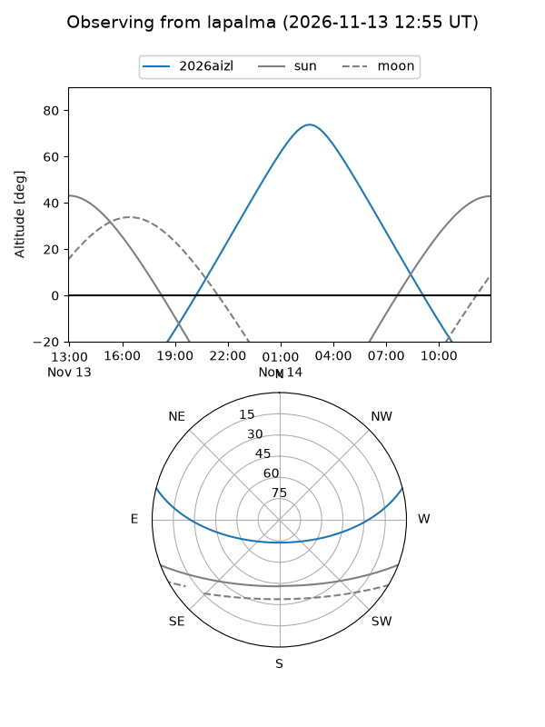
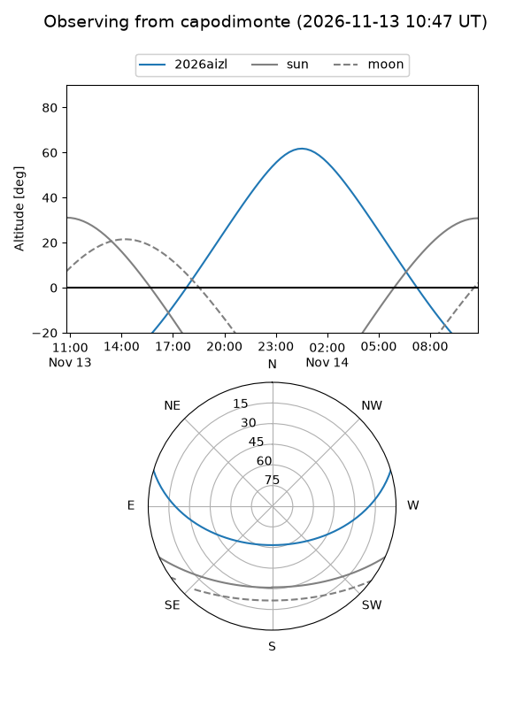
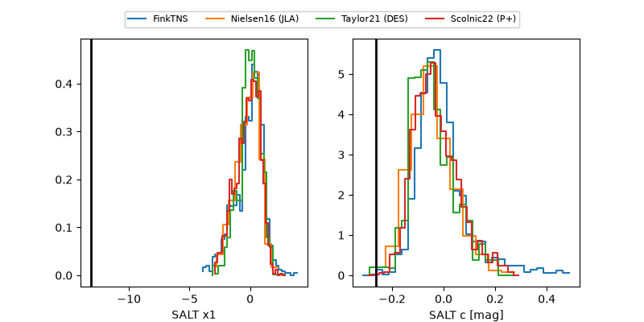

2026aizl
Target 2026aizl at 2026-11-12 17:36
Aliases and brokers:
FINK-ZTF: ztf.fink-portal.org/ZTF26acflemr
Lasair-ZTF: lasair-ztf.lsst.ac.uk/objects/ZTF26acflemr
ALeRCE-ZTF: alerce.online/object/ZTF26acflemr
YSE-PZ: ziggy.ucolick.org/yse/transient_detail/2026aizl
TNS name: wis-tns.org/object/2026aizl
Direct TNS query: direct search
alt names
ZTF26acflemr (ztf,fink_ztf)
2026aizl (tns,yse)
Coordinates:
equatorial (ra, dec) = 74.6591,+12.57584
equatorial (HMS+DMS) = 04:58:38.18,+12:34:33.04
galactic (l, b) = (187.7686,-18.13143)
Flags:
likely cv: !!
CV pen: 0.0022616458231086317
peak dt: +10.5
Photometry:
last atlasc=19.25, atlaso=18.85, ztfg=20.08, ztfr=20.04
2 atlasc, 1 atlaso, 4 ztfg, 6 ztfr detections
Lightcurve

Visibility



Additional plots
